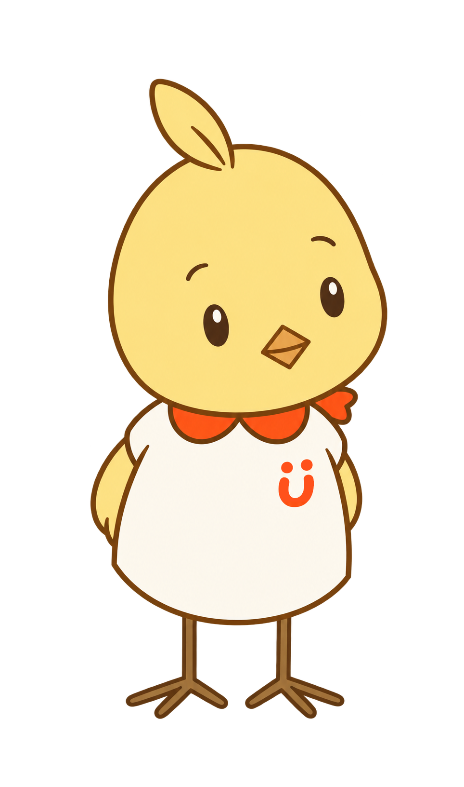

いまの声、
いまの声、誰かに届いたかな？
SCENE 01
まず、子どもの声をよく見る
声の大きさや形を整えず、誰を見ているか、声のあとに何をするかを見ます。
声、視線、表情、動きの間にある、
小さな「返ってきた」を見つけます。
いまの声、声の大きさや形を整えず、誰を見ているか、声のあとに何をするかを見ます。
同じ音を一度返したり、笑顔を見せたり。たくさん教えず、短く応えます。
 「あー」って、
「あー」って、 次がなくても、
次がなくても、すぐ次を促さず、動き出すのを待ちます。視線や小さな笑顔も返事になります。

ミモから、見方のおさらい